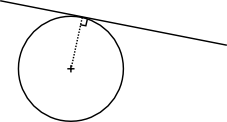
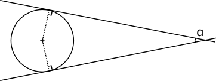
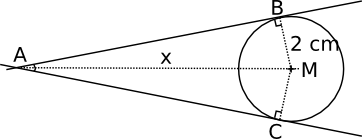
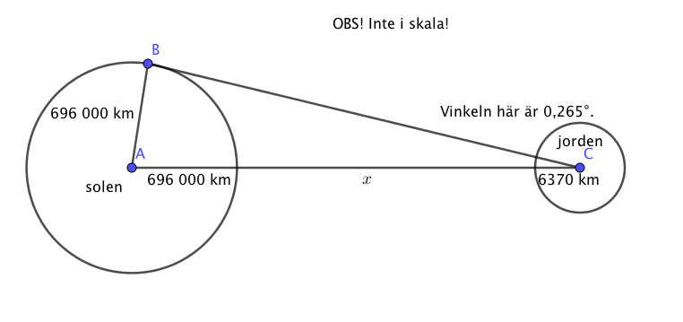
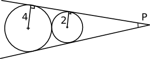
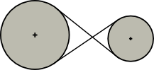

11. Tangent för cirkeln
En tangent är en linje, eller sträcka, som har en berörelsepunkt med ett föremål. Vi talar om att linjen tangerar föremålet eller kroppen.
Till nästa ser vi på hur linjer kan tangera cirklar.
Egenskaper för tangenten
| Tangenten bildar en rät vinkel med radien. | Från en punkt utanför cirkeln kan vi rita två tangenter. |
|  |  |
Exempel 1 En cirkel syns från en punkt under vinkeln \( 20^{\circ} \). Bestäm avståndet mellan cirkeln och punkten då cirkelns radie är 2,0 cm.

Lösning
\( \triangle ABM \) är rätvinklig med \( B \) som rät vinkel. Vi utnyttjar trigonometri:
\( \begin{array}{rcl} \sin 10^{\circ} & = & \dfrac{2}{x} \\ \\ x\cdot \sin 10^{\circ} & = & 2 \\ x & = & \dfrac{2}{\sin 10^{\circ}} = 11,517 \ldots \textrm{ cm} \\ \end{array} \)
Avståndet är \( 11,517 - 2 = \) 9,5 cm.
Exempel 2 Ett flygplan flyger på 15 km höjd. Hur långt bort på jorden kan man räkna med att man ser om vädret är klart?

Lösning
För att bestämma vinkeln utnyttjar vi trigonometri.
\( \begin{array}{rcl} \cos \alpha & = & \dfrac{6370}{6370 + 15} \\ \\ \alpha & = & 3,928\ldots ^{\circ} \\ \end{array} \)
Båglängden \( b = \dfrac{\alpha}{360^{\circ}}\cdot 2\pi r = \dfrac{3,928^{\circ}}{360^{\circ}}\cdot 2\pi \cdot 6370 \textrm{ km} = 436,7 \textrm{ km} \approx 440 \) km.
Uppgifter
Bestäm längden av bågen \( b \) i cirkeln nedan.

Storleken av mittpunktsvinkeln är \( \cos \alpha =\dfrac{5}{10+5} \) ger \( \alpha = 70,529^{\circ} \).
Längden av bågen är \( \dfrac{70,529^{\circ}}{360^{\circ}}2\pi\cdot 5 = 6,155 \).
- Hur långt ut på Finska viken kan man se från Hotell Tornis terass som finner sig 86 m över havsytan? Jordens radie är 6370 km.
Vi bestämmer mittpunktsvinkeln, \( \cos \alpha =\dfrac{6370}{6370+0,086} \) ger \( \alpha = 0,2977\ldots^{\circ} \).
Hur långt vi ser, är samma som båglängden, \( \dfrac{0,2977\ldots^{\circ}}{360^{\circ}}2\pi \cdot 6370 = 33,100 \) km. Alltså 33 km.
- Höjden på vulkanen Teide på Teneriffa är 3718 meter över havsnivå. Vid bra väder ser man nätt och jämt Afrikas kust från toppen av Teide. Vilket är avståndet mellan Teide och Afrikas kust. Jorden radie är 6370 km.
Vi bestämmer mittpunktsvinkeln, \( \cos \alpha =\dfrac{6370}{6370+3,718} \) ger \( \alpha = 1,95711\ldots^{\circ} \).
Hur långt vi ser, är samma som båglängden, \( \dfrac{1,95711\ldots^{\circ}}{360^{\circ}}2\pi \cdot 6370 = 217,58 \) km. Alltså 220 km.
- Solen syns från jorden under en vinkel om 0,53o. Bestäm avståndet, i km, mellan solen och jorden då jordens radie är 6 370 km och solens är 696 000 km.
Vi har följande situation:

Eftersom vi har motstående katet och hypotensysan får vi sinus, \( \sin (0,265^{\circ}) = \dfrac{696 000}{696 000 + x + 6370} \).
Vi får \(x = 149 780 000 \), alltså ca 150 000 000 ± 1000000 km.
Två cirklar tangerar varandra. Vi låter de tangenter för cirklarna som tangerar bägge cirklar skära varandra i punkten P. Bestäm avståndet mellan den mindre cirkeln och P.

Vi kallar avståndet \( x \) mellan den mindre cirkeln och P. Vi har två likformiga trianglar som vi bildar förhållanden för.
\( \dfrac{x+2}{2}=\dfrac{x+2+2+4}{4} \) ger att \( x=4 \).
- I en likbent triangel, där är sidorna 10 och basen 8 lång, inskrivs en cirkel.
- Hur stor del utgör cirkelns radie av triangelns höjd?
Förhållandet 1:4, en 1/5 del.
- Hur många procent utgör cirkelns area av triangelns area? Svar med nogrannheten en tiondels procent.
\( \dfrac{\pi\sqrt{21}}{31} \approx 0,4644 \)
- Hur stor del utgör cirkelns radie av triangelns höjd?
- En rem är dragen som en åtta över två hjul med radierna 40 cm och 60 cm. Hjulens axlar befinner sig från varandra på ett av stånd om 180 cm. Bestäm längden av remmen.

Vi utgår från likformiga trianglar. 9,3 m.